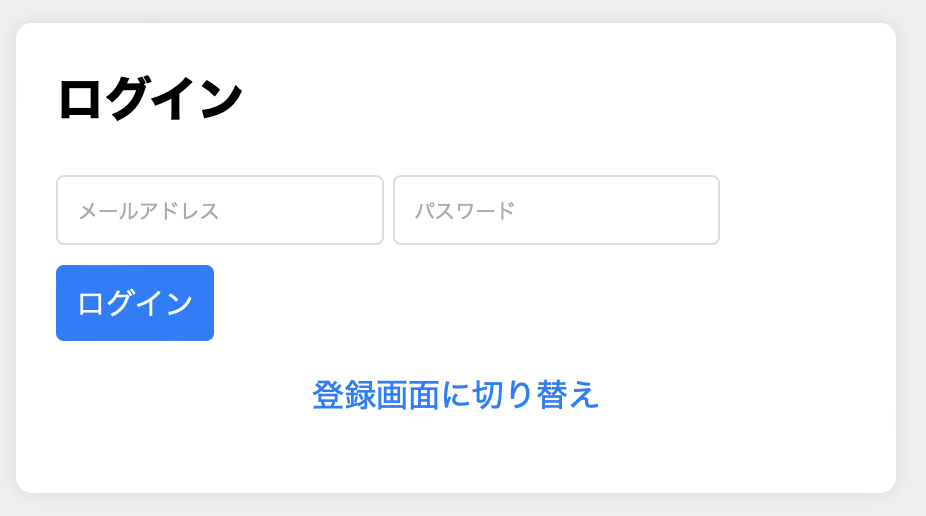
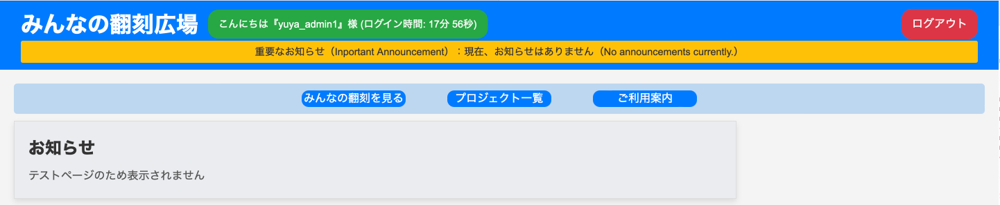

ログイン画面の操作方法（初期登録方法）

ユーザー名・メールアドレス・パスワードの入力をお願いします。
※セキュリティの関係上ログイン情報が削除され再登録が必要になるケースがありますが、最初に登録した内容をもう一度登録画面にて入力してください。その際、ユーザー名を変えられると新しいユーザー名になリますのでユーザー名は変更しないことをおすすめします。
ログイン方法

初期登録したメールアドレスとパスワードを入力し「ログイン」をクリックしてください
※エラーや入力内容が間違っていると表示されそれが、数回試しても「ログイン」できない場合は初期登録からやり直してください。
トップページに関する操作方法

- ログインが完了するとトップページが表示されます。
- 画面一番上には、ログインをしている人のユーザー名と滞在時間の表示がされています
- ログアウトボタンでホームページに戻る仕様となっています。
- 重要なお知らせでは、サーバーダウンやアップデート日時など緊急性のメッセージが表示されます
- お知らせでは、追加機能や更新した内容などの表示がされます
次に、(みんなの翻刻を見る)（プロジェクト一覧）（ご利用案内）3つの内容についての説明です。１つ目の（みんなの翻刻を見る）では、本サイトをご利用の皆様が翻刻し尚且つ完成した プロジェクトを一括して管理している場所となります。この機会にぜひ他の翻刻にも触れてみてはいかがですか？ ２つ目の（プロジェクト一覧）では、翻刻する前の原稿データが管理されている 場所となります。様々な歴史的文書に触れ気になる原稿の翻刻をしてみてはいかがですか？ ３つ目の（ご利用案内）は、このページとなります。